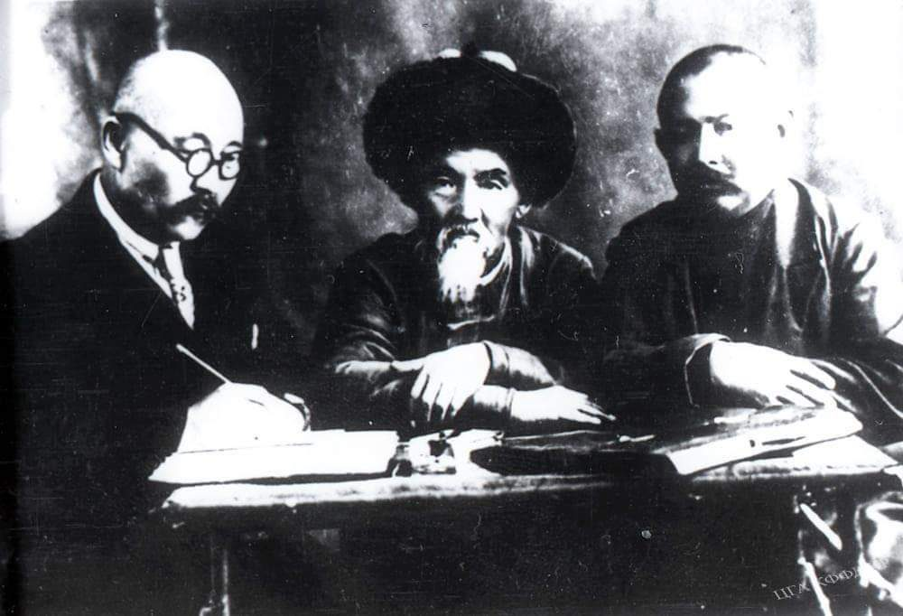
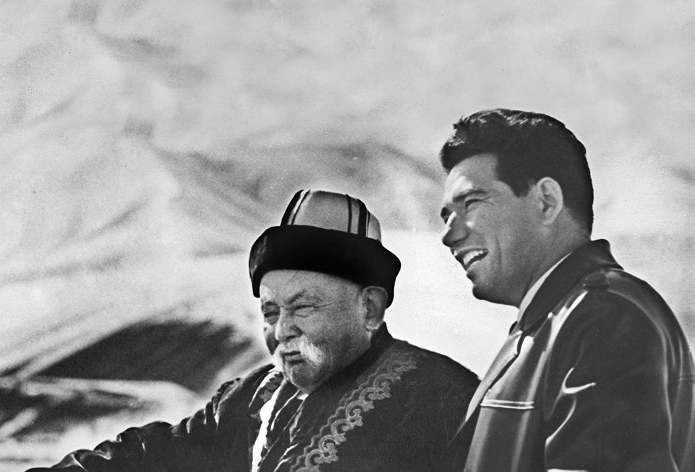
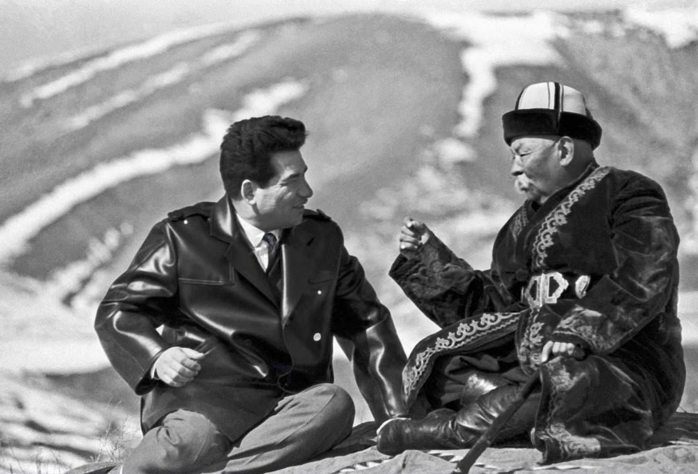

Өмүр жолуЖизненный путь
Саякбай Каралаев 1894-жылы Ысык-Көлдүн Тоң районундагы Ак-Өлөң айылында туулган. Эпоско болгон кызыгуусун чоң энеси Дакыш ойготкон.
1924-жылы атактуу манасчы Чойке Өмүр уулу менен жолугуп, бир нече жыл анын жанында жүрүп, «Манасты» андан үйрөнгөн.
Саякбай Каралаев родился в 1894 году в селе Ак-Олон Тонского района на Иссык-Куле. Любовь к эпосу в нём пробудила бабушка Дакыш.
В 1924 году он встретил прославленного манасчы Чойке Омур уулу и несколько лет учился у него сказывать «Манас».
«Чойке – чынар, мен – чырпык»«Чойке — чинара, я — побег»Саякбай Каралаев устаты жөнүндөСаякбай Каралаев о своём учителе
Үч муундун дастаныТрилогия
Анын айтуусунан «Манас», «Семетей» жана «Сейтек» — эпостун толук трилогиясы 1935-жылдан баштап кагазга түшүрүлгөн. Жалпы көлөмү 500 553 сап.
Бул Гомердин «Илиада» менен «Одиссеясынан» 20 эсе, Фирдоусинин «Шахнамесинен» 5 эсе, «Махабхаратадан» 2 эсе көп. Ошондуктан Саякбайды «ХХ кылымдын Гомери» деп аташат. Ал эпосту бир нече ай бою токтобой айта алган.
С его слов с 1935 года записана полная трилогия эпоса — «Манас», «Семетей» и «Сейтек». Её объём — 500 553 строки.
Это в 20 раз больше «Илиады» и «Одиссеи» Гомера, в 5 раз больше «Шахнаме» Фирдоуси и в 2 раза больше «Махабхараты». Поэтому Саякбая называют «Гомером ХХ века». Он мог сказывать эпос несколько месяцев подряд.
ТаанууПризнание
Фрунзедеги филармониянын биринчи штаттык манасчысы болгон. 1938-жылы Жазуучулар союзуна мүчө болуп, 1939-жылы Кыргыз ССРинин эл артисти наамын алган.
Саякбай Каралаев 1971-жылы 7-майда Фрунзеде (азыркы Бишкек) дүйнөдөн кайткан.
Он стал первым штатным манасчы Фрунзенской филармонии. В 1938 году был принят в Союз писателей, в 1939 году получил звание народного артиста Киргизской ССР.
Саякбай Каралаев скончался 7 мая 1971 года во Фрунзе (ныне Бишкек).
Маанилүү даталарГлавные даты
- 1894 — Ак-Өлөң айылында туулганРодился в селе Ак-Олон
- 1924 — Чойке Өмүр уулуга шакирт болгонСтал учеником Чойке Омур уулу
- 1935 — Трилогияны жазып алуу башталганНачата запись трилогии
- 1939 — Кыргыз ССРинин эл артистиНародный артист Киргизской ССР
- 1971 — Фрунзеде дүйнөдөн кайтканСкончался во Фрунзе
СүрөттөрФотографии



Wikimedia Commons · коомдук менчикWikimedia Commons · общественное достояние
ВидеоВидео
Сквердеги башка манасчыларДругие манасчы в сквере


Булак:Источник: Википедия